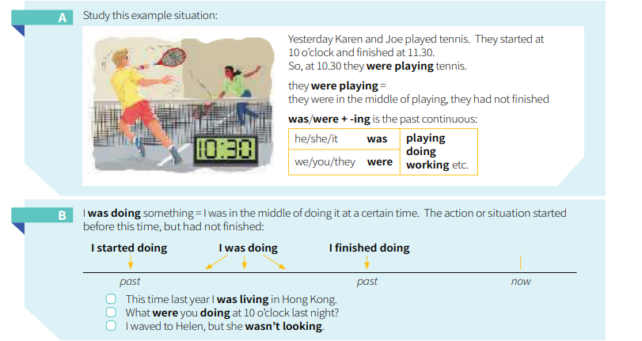

was/were + -ingYesterday Karen and Joe played tennis. They started at 10 o'clock and finished at 11:30. So, at 10:30 they were playing tennis.
| Subject | Auxiliary | Verb + -ing |
|---|---|---|
| he / she / it | was | playing, doing |
| we / you / they | were | working etc. |
I was doing something = I was in the middle of doing it at a certain time. The action started before this time, but had not finished.

Fig. 6.1 — Time diagram from English Grammar in Use
= in the middle of an action
= อยู่ระหว่างการกระทำ
We were walking home when I met Dan.
เรากำลังเดินกลับบ้านตอนที่ฉันเจอ Dan
Kate was watching TV when we arrived.
เคทกำลังดูทีวีอยู่ตอนที่เรามาถึง
= complete action
= การกระทำที่เสร็จสมบูรณ์
We walked home after the party last night.
เราเดินกลับบ้านหลังจากงานปาร์ตี้เมื่อคืน
Kate watched TV a lot when she was ill last year.
เคทดูทีวีเยอะมากตอนที่เธอป่วยเมื่อปีที่แล้ว
Use past continuous for the background action, and past simple for the interrupting event:
Use past simple when one thing happens after another:
When Karen arrived, we were having dinner.
ตอนที่ Karen มาถึง เรากำลังกินข้าวอยู่
(dinner had already started before she arrived)
(กินข้าวเริ่มไปแล้วก่อนที่เธอจะมา)
When Karen arrived, we had dinner.
ตอนที่ Karen มาถึง เราก็กินข้าว
(Karen arrived → then we had dinner)
(Karen มาถึง → แล้วเราก็กินข้าว)
Some verbs (e.g. know, want) are not normally used in continuous forms (is/was + -ing etc.).